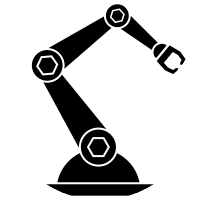
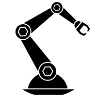
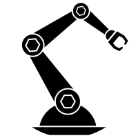
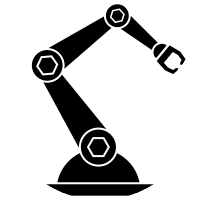

I'm Aditya Varadaraj.
A Robotics Enthusiast
 



I am a Masters in Robotics Student at University of Maryland - College Park. (Expected Graduation May 2023)
My interest lies in Control of Robotic Systems and Medical Robotics.
Relevant Coursework: Control of Robotic Systems, Applied Nonlinear Control of Aerospace Systems
I am proficient in various programming languages and softwares like Python, C++, ROS, Gazebo, MATLAB, OpenCV, Arduino and intermediate level knowledge of Tensorflow and Pytorch. I have good knowledge of Data Structures and Algorithms
Relevant Coursework: Fundamentals of AI and Deep Learning Framework, Statistical Pattern Recognition
I have good knowledge and experience working with OpenCV. Relevant Coursework: Perception for Autonomous Robots
Relevant Coursework: Planning for Autonomous Robots
Derived and Understood the SMC (Sliding Mode Control), Integral SMC (ISMC), Super Twisting Algorithm (STA) controls algorithms and their finite-time convergence in the existing IEEE journal paper. Implemented the control algorithm in MATLAB to best reproduce the results in the journal paper.
Video Stabilization using VidStab and 3D Human Pose Estimation with OpenPose, Gesture Detection, and Depth estimation with hardware implementation on Jetson Nano and Arduino based 4-wheeled mobile robot made by us.
RRT* with sampling based on Incenter and Centroid of traingle between start, goal and random sample. The Incenter-based RRT* was found to be most robust.
Derived equations of motion and linearized the non-linear system using Jacobian linearization to obtain state-space equation. Checked controllability and implemented LQR control algorithm in MATLAB for the linearized and original nonlinear system. Checked observability of the system for various choice of output vectors and obtained best Luenberger Observer by pole placement. Plotted response of linearized and original nonlinear systems to initial conditions and unit step input for observable choices of output vector. Implemented LQG for linearized and original nonlinear system in MATLAB for smallest observable output vector. Plotted the initial response and unit step response of the systems.
Derived and Understood the mechanics/dynamics equations, the controls algorithm and the cost function in the existing IEEE journal paper. Implemented the holistic adaptive MPC control algorithm in MATLAB to best reproduce the results in the paper. Tuned some weight and constraint parameters to make the results match the ones given in paper.
Developed ROS/C++ code using OOP to make the explorer turtlebot move to the locations of various aruco markers, rotate until it detects the marker and store and broadcast its fiducial ID and transform w.r.t. map frame to parameter server. And come back home after reading all aruco markers (Searching for the victims) and make the follower turtlebot go to the marker locations broadcasted by the explorer with 0.4 mts. tolerance in increasing order of fiducial ID and then come back home (Saving the victims).


Email: varadarajaditya@gmail.com